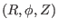

In the Cartesian coordinates, a point is described by its coordinates , which, in vector form, is written as
where
is the location vector of the point. The transformation
between the Cartesian coordinates system, , and a general
coordinates system,
, can be written as
(For example, cylindrical coordinates
 can be considered as a
general coordinate systems, which are defined by
.) The
transformation function in Eq. (101) can be written as
The Jacobian determinant (or simply called Jacobian) of the transformation in
Eq. (102) is defined by
which can be written as
It is easy to prove that the Jacobian
 in Eq. (104)
can also be written (refer to another notes)
in Eq. (104)
can also be written (refer to another notes)
In most cases, the Jacobian of the transformation from the Cartesian
coordinates to a particular coordinate system are simply called the Jacobian
of that particular coordinate system without mentioning that this
transformation is with respect to the Cartesian coordinates. Using this
nomenclature, the Jacobian
of the Cartesian coordinates is
obviously equal to one since the transformation is defined with respect to the
Cartesian coordinates. If the Jacobian of a coordinate system is greater than
zero, it is called a right-hand coordinate system. Otherwise it is called a
left-hand system.
yj
2018-03-09